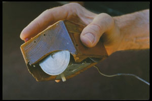
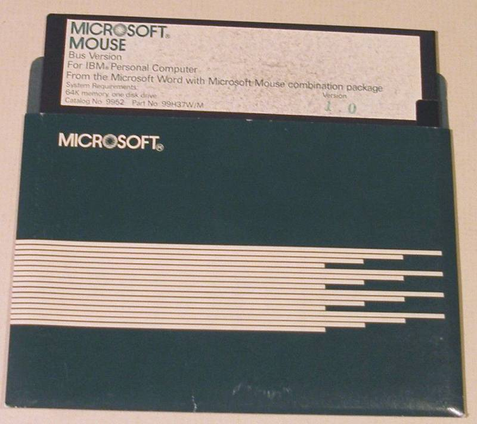

The first known mouse was created in the early 1970s by Douglas
Engelbart. Engelbart was working on a project at Xerox PARC (Palo
Alto Research Center) that involved creating a computer that could
be used to manipulate objects on a screen. The device he created was
called a "mouse" because it resembled a small rodent.

Inventor Douglas Engelbart holding the first computer mouse, showing the wheels that make contact with the working surface
The mouse quickly became a standard input device for personal
computers. In 1981, Microsoft released the first version of its
Windows operating system, which included support for the mouse.
Apple released the first Macintosh computer in 1984, which also
featured a mouse.

Microsoft Mouse 1.0 - Floppy Disk
Today, the mouse is an essential part of most personal computers. It
is used to point and click on objects on the screen, making it a
very versatile and user-friendly input device.